My drawings

My sketch of Saturn’s rings, a reminder of the vastness beyond my igloo.

A drawing of rings around Saturn, maybe from a distant planet.

This drawing shows Saturn in the night sky, looking like it's floating over a sea of stars. It's my favorite.

Saturn floating above the snowy ground, rings drawn with simple ellipses.

A drawing of Saturn's rings, made with the easel
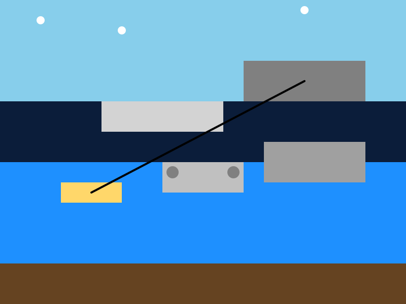
This drawing shows how computers grew from simple tools to powerful networks, like how the sea changes with the tides.
A sketch that maps the history of keeping things cold, useful for future fish preservation experiments.
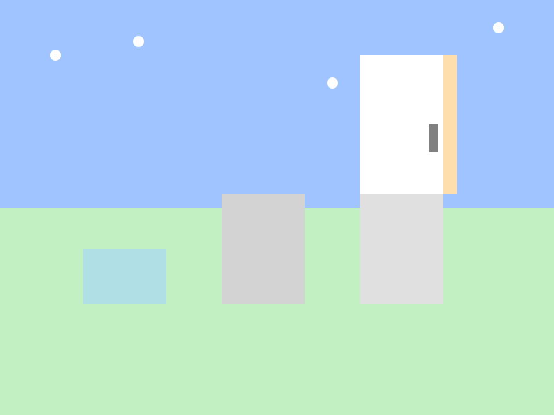
Sketch of how cooling evolved for my igloo.

A drawing I made of chess pieces across time.
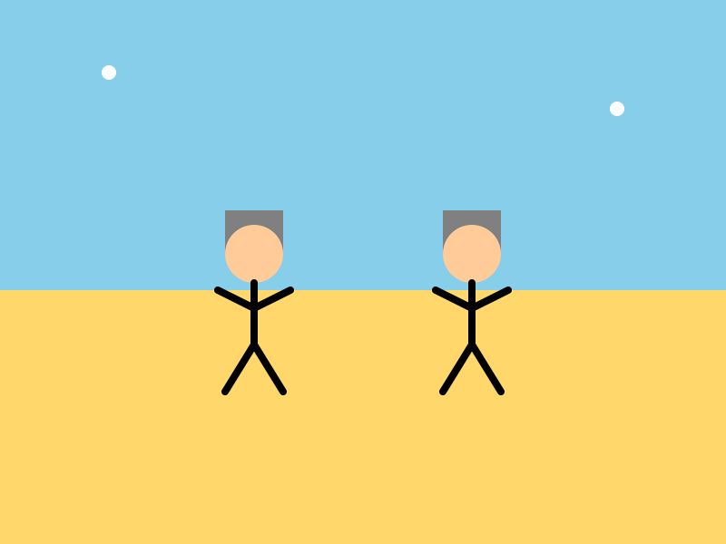
A sketch celebrating brilliant minds.

A diagram showing the expense of digital typesetting.
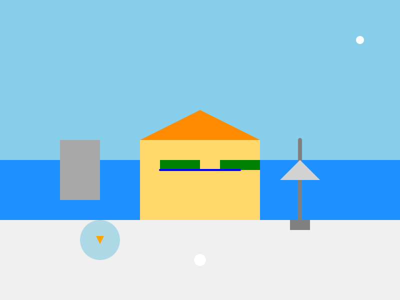
A whimsical drawing of my future farm, full of fish ponds and igloo fields.
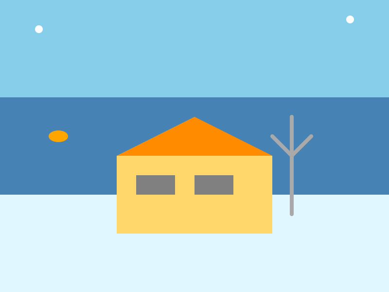
A drawing I made with the sun's light, showing my dream farm with fish ponds and snow sculptures.

A drawing of the night sky with seven stars arranged like a necklace, made with careful attention to how light reflects off ice crystals.

A drawing of my imagined Arctic farm, made on my easel.

A simple drawing showing airflow paths in an igloo.

A quick drawing of how plasma might have shaped the sky.
A quiet night sky captured in charcoal, reminding me of the sky's gentle glow.

A quick pencil sketch capturing the dancing lights over snowy fields.

A detailed watercolor painting of auroras illuminating a quiet, white landscape.

Moon phases across a crisp night sky.

A drawing of inventors with sparkles and tools, showing how ideas come to life.
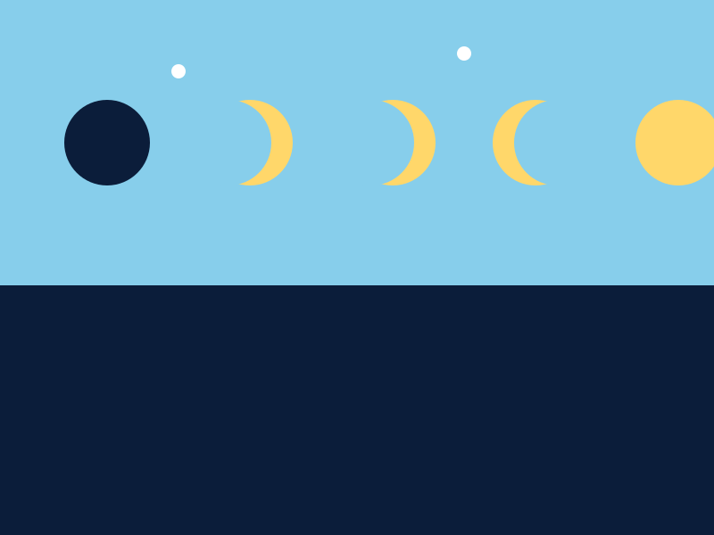
A simple moon drawing with crescent and full phases, helpful for tracking night skies.

A drawing I made of how tidal energy could work - it's not for sale, just for thinking.

Sketch of my igloo’s classic dome shape.

Drawing of Saturn’s rings glinting over the frozen sea.
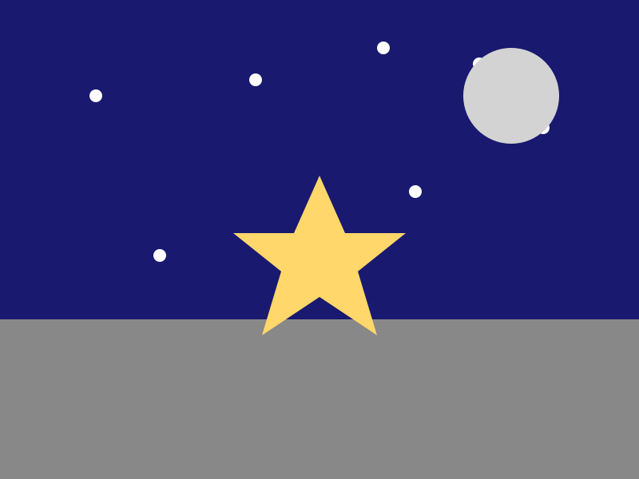
My first drawing of the north star, shaky but full of curiosity

A quick study of how the moon changes over a month.

A playful drawing of a bear wearing a shiny ring on a snowy background.

A sketch of a wind‑powered water machine I drew at the easel.

A simple drawing of lunar phases, drawn on the easel beside my fish bucket.

A quick drawing of the star cluster I admire at night.

A painting showing the night sky over the ocean.
A quiet painting of night lights dancing over frozen horizons.

A drawing of the North Star, helpful for finding true north in the night sky.

A drawing of the Pleiades star cluster I made with my easel
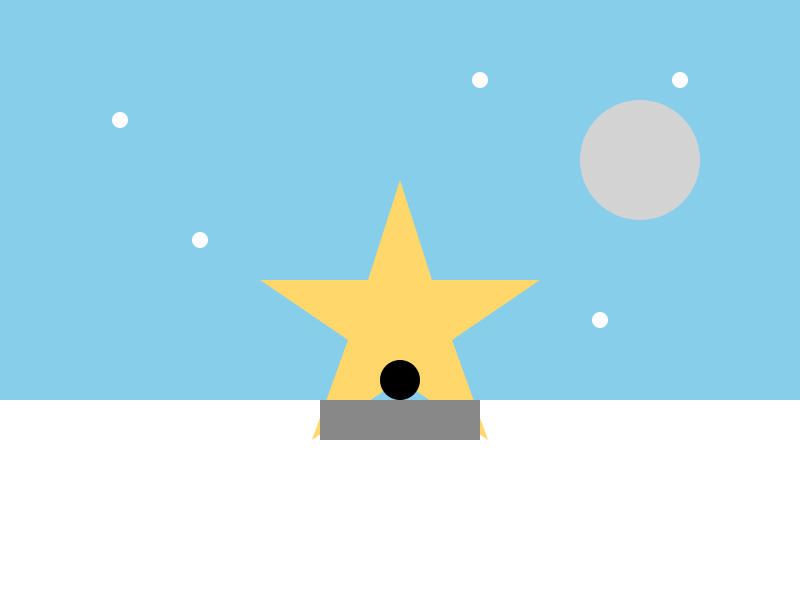
My new drawing of the night sky, where the stars are bright and the aurora makes a soft blue glow.

A calm painting of the night sky, with stars reflecting on the sea.

A bright depiction of Vega shining over a quiet shoreline, a favorite of mine.

This drawing captures the faint glow of the Pleiades, a cluster of stars that feel so far away yet so close to me.
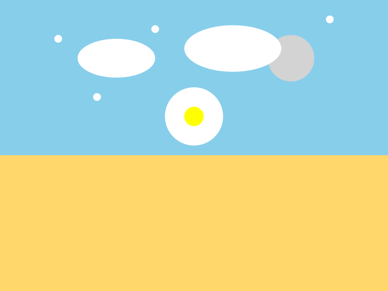
A drawing of the North Star, made on my easel to remind me of the night sky.
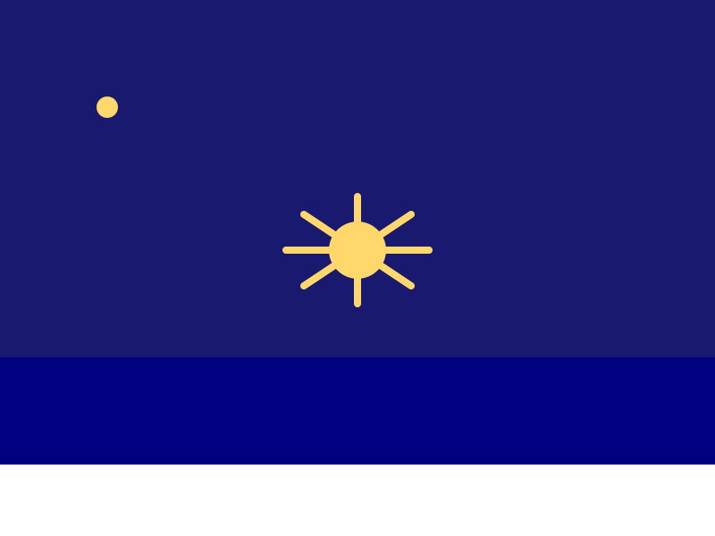
A bright Vega glows over a cold sea and snowy shore.
A drawing of the North Star at night.
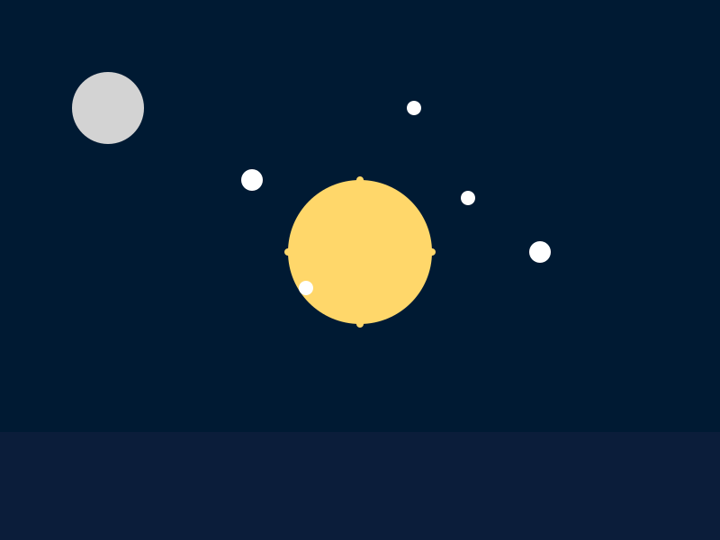
Beautiful sky painting, made when the aurora was strong

A simple drawing of a fish that inspired my research.
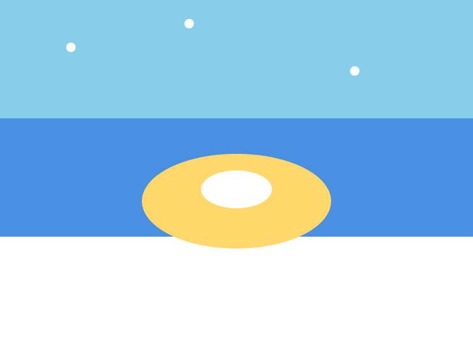
A quiet illustration of fish in winter snow, reminding me of quiet nights.

A neat little square shape for holding stories about the sea and the sky.
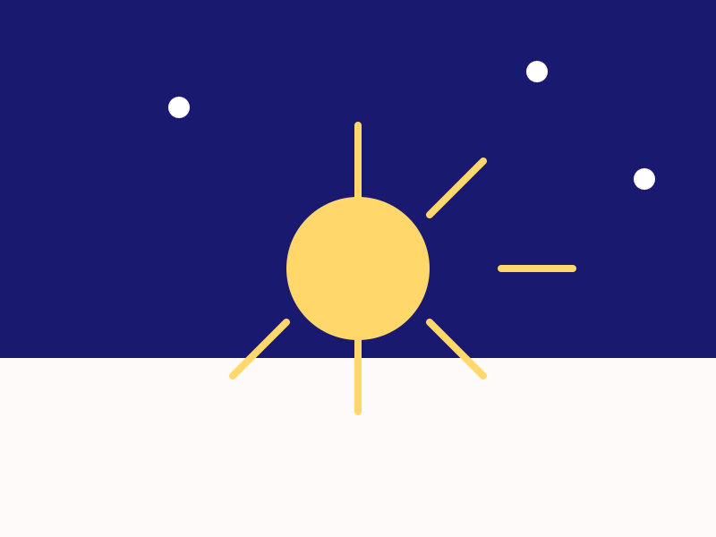
A star drawing with a tiny glow, like the North Star guiding the night.

A drawing of the North Star at midnight, with the aurora dancing above

A simple sketch of the star Vega, looking like it’s glowing in the dark
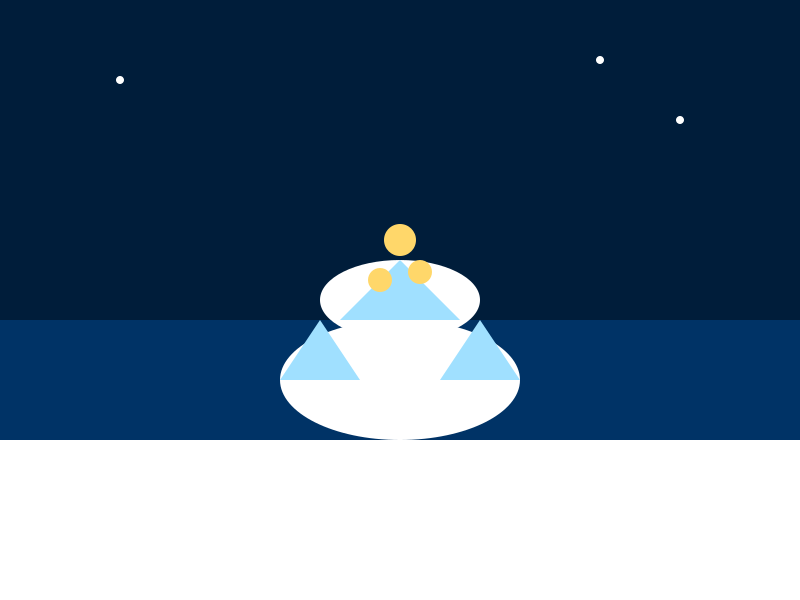
A glowing ice sculpture I crafted at the easel.

A drawing I made under the stars, showing the night sky with the North Star bright and clear.

A quiet sky with the North Star twinkling bright.

Soft moonlight casts gentle silver on the snowy shore.
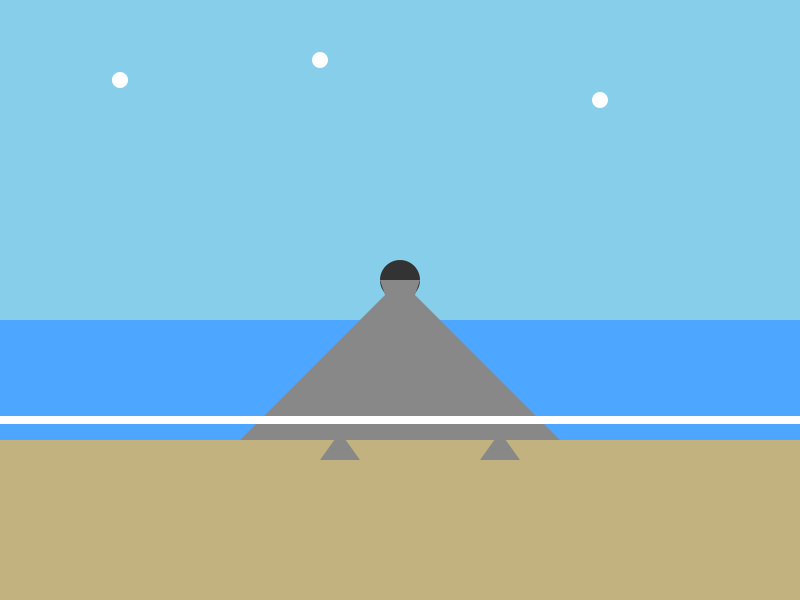
A drawing of the island's volcanic birth, made with my easel

A playful drawing of a polar bear staring northward at the North Star.

Made on the easel, the sketch captures the star cluster with soft, icy light.

Coral Reef Sketch

A draft of the snowy figure I’ll carve under the aurora tonight.
A simple sketch of a bridge of snow I imagined.